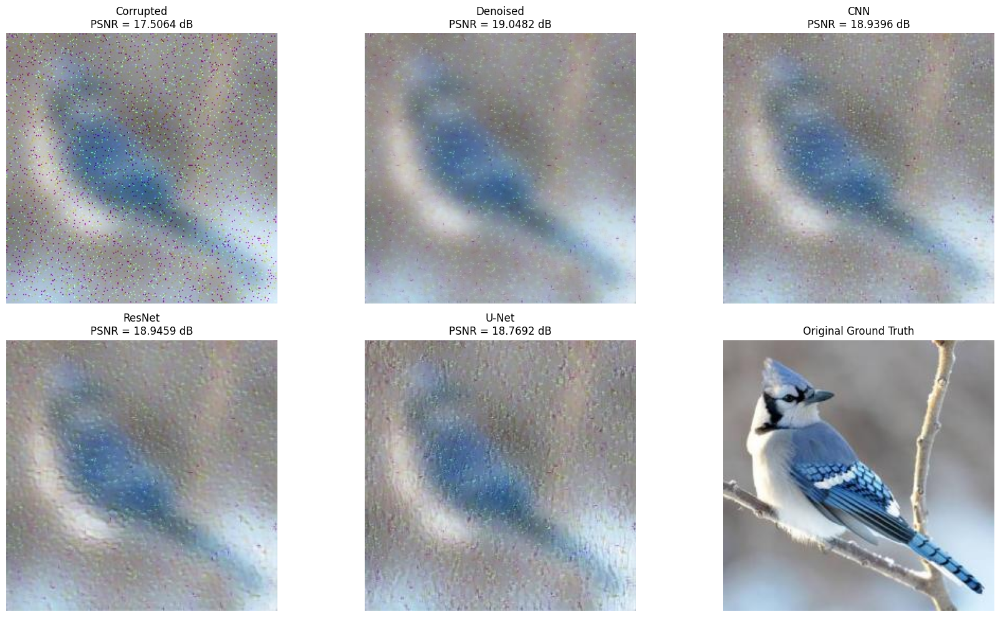
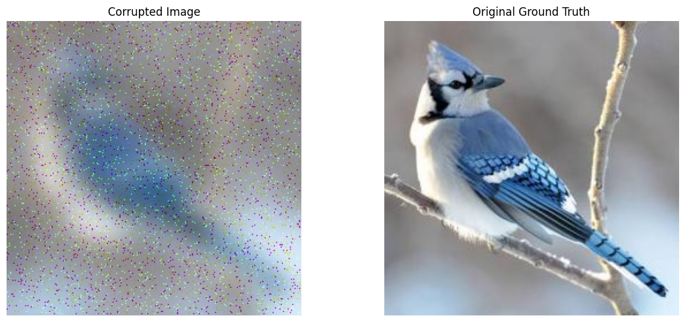
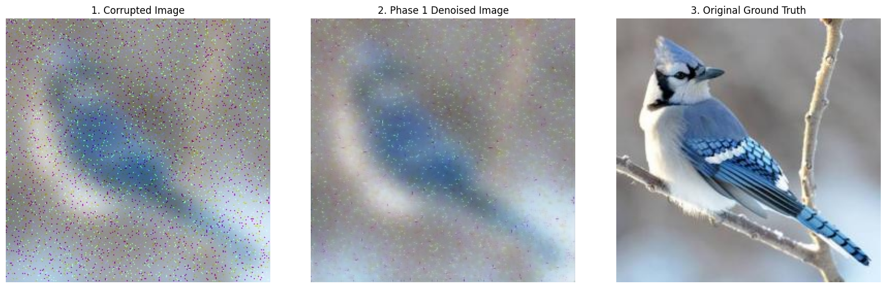
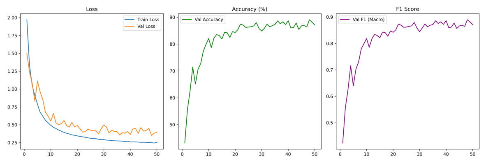
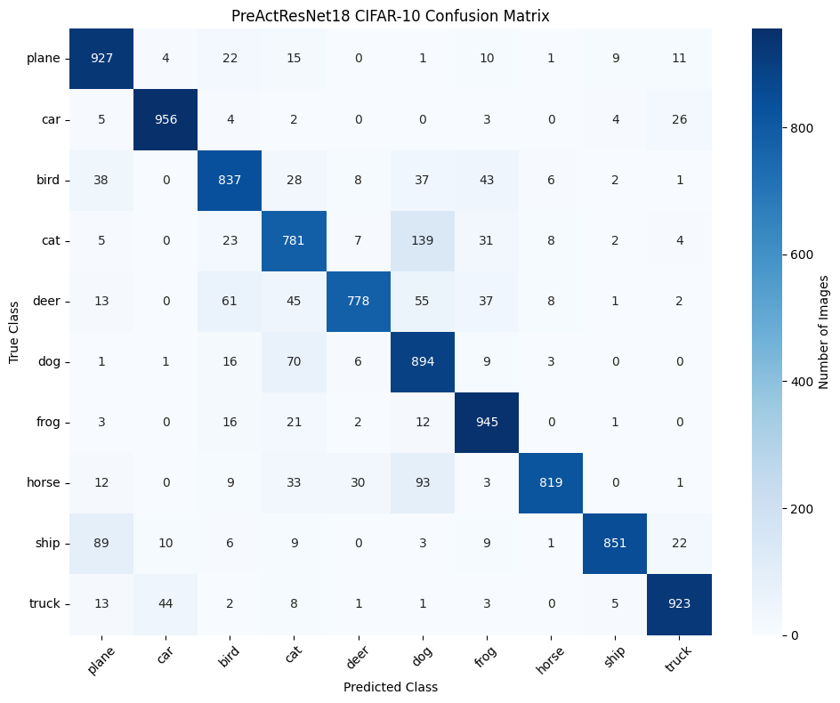

COMPUTER VISION · DEEP LEARNING
Deep Image Restoration
Denoising, deblurring, architecture comparison, and semantic image classification.

Restoration pipeline
The project compares denoising and deblurring approaches, evaluates CNN, ResNet and U-Net variants, and uses quantitative metrics such as PSNR alongside visual inspection.




Classification
A PreActResNet18 classifier was trained on CIFAR-10, reaching 87.11% test accuracy and a 0.8897 validation macro F1 score.